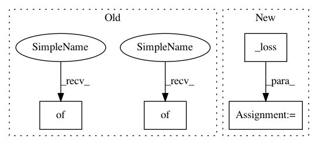

6aad1de658a933d3fa376f7fe9abf419da8a8bd2,python/baseline/dy/seq2seq/train.py,Seq2SeqTrainerDynet,test,#Seq2SeqTrainerDynet#Any#Any#Any#,65
Before Change
def test(self, vs, reporting_fns, phase):
self.model.train = False
metrics = {}
total_loss = total = 0
steps = len(vs)
epochs = 0
if phase == "Valid":
self.valid_epochs += 1
epochs = self.valid_epochs
start = time.time()
pg = create_progress_bar(steps)
for batch_dict in vs:
dy.renew_cg()
inputs = self.model.make_input(batch_dict)
tgt = inputs.pop("tgt")
output = self.model.forward(inputs)
loss = self._loss(output, tgt, batch_dict["tgt_lengths"])
total += self._total(tgt)
loss_val = loss.npvalue().item()
total_loss += loss_val
pg.update()
pg.done()
self.log.debug({"phase": phase, "time": time.time() - start})
avg_loss = float(total_loss)/total
metrics["avg_loss"] = avg_loss
metrics["perplexity"] = np.exp(avg_loss)
After Change
tgt = inputs.pop("tgt")
tgt_lens = batch_dict["tgt_lengths"]
output = self.model.forward(inputs)
loss = self._loss(output, tgt, tgt_lens)
toks = self._num_toks(tgt_lens)
loss_val = loss.npvalue().item()
total_loss += loss_val * toks
total_toks += toks
metrics = self.calc_metrics(total_loss, total_toks)
self.report(
In pattern: SUPERPATTERN
Frequency: 3
Non-data size: 4
Instances
Project Name: dpressel/mead-baseline
Commit Name: 6aad1de658a933d3fa376f7fe9abf419da8a8bd2
Time: 2018-11-26
Author: blester125@users.noreply.github.com
File Name: python/baseline/dy/seq2seq/train.py
Class Name: Seq2SeqTrainerDynet
Method Name: test
Project Name: IBM/adversarial-robustness-toolbox
Commit Name: 64764718080b11c8fb91df34c12e0ce8ac54aa4e
Time: 2018-05-15
Author: M.N.Tran@ibm.com
File Name: art/classifiers/pytorch.py
Class Name: PyTorchClassifier
Method Name: fit
Project Name: michaelhush/M-LOOP
Commit Name: 6e5cf676b113af8d70e34224f23bc8eace618856
Time: 2017-05-02
Author: harry.slatyer@gmail.com
File Name: mloop/nnlearner.py
Class Name: SingleNeuralNet
Method Name: fit
Project Name: dpressel/mead-baseline
Commit Name: 6aad1de658a933d3fa376f7fe9abf419da8a8bd2
Time: 2018-11-26
Author: blester125@users.noreply.github.com
File Name: python/baseline/dy/seq2seq/train.py
Class Name: Seq2SeqTrainerDynet
Method Name: test